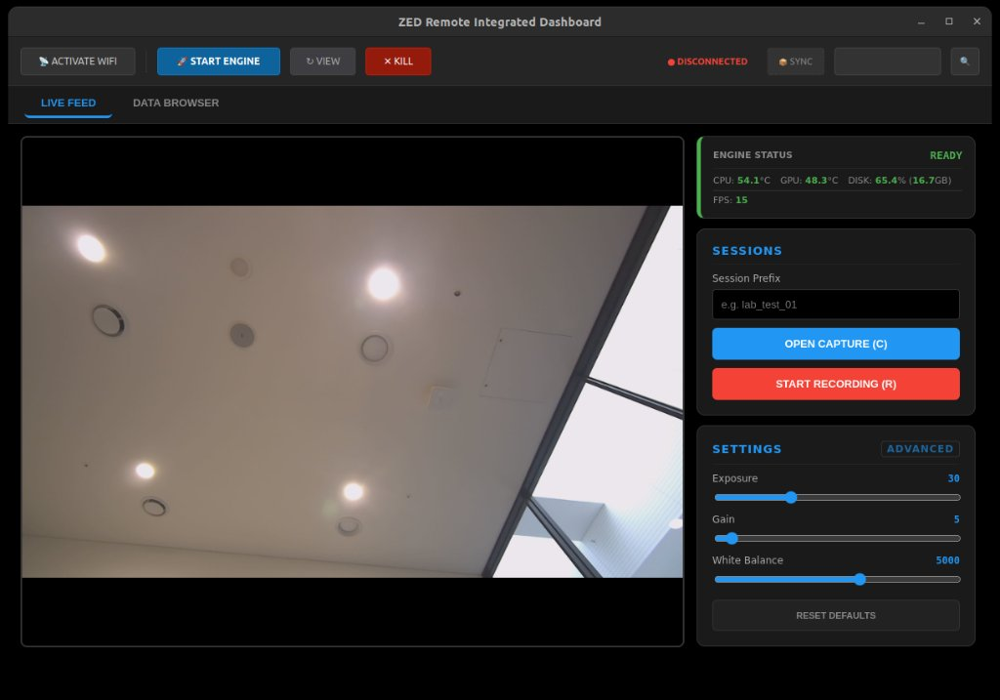

ZED Remote System
화면 없는 장비에 연결한 스테레오 카메라로 현장 데이터를 모으기 위한 원격 수집 도구
- 역할
- 회사 업무, 수집 엔진과 대시보드 설계·구현
- 기간
- 2026.03 ~ 2026.05
- 결과
- 현장에서 터미널 없이 배포, 실행, 상태 확인을 대시보드 하나로
개요
디스플레이가 없는 Jetson에 연결한 스테레오 카메라로 현장 데이터를 모으기 위해, 노트북 대시보드에서 장비의 수집 엔진을 배포하고 실행하고 상태를 확인하는 도구를 만듦

현장 장비 관리의 문제
장비에 화면이 없어 수집이 제대로 되는지 현장에서 알 수 없음. 사무실로 돌아온 뒤 문제를 발견하면 그 촬영은 다시 해야 함
- 직접 연 SSH 세션은 네트워크가 끊기면 진행 중인 캡처도 함께 멈춤
- 수집 중 발열, 남은 저장 공간, 프레임이 실제로 저장되는지를 확인할 수 없음
- 장비마다 코드와 의존성을 맞추는 일이 매번 반복됨
프레임 누락 방지
저장이 밀릴 때 프레임을 버리면 겉으로는 FPS가 유지되지만 데이터에는 빈 구간이 생김. 그래서 프레임을 버리지 않고 캡처가 기다리게 함
- 저장 대기
- 저장 큐에 상한을 두고, 가득 차면 캡처 루프가 기다림. 저장이 느려지면 FPS가 떨어지는 대신 프레임이 빠지지 않음
- 메모리 보호
- 큐 상한으로 고해상도 이미지가 메모리에 끝없이 쌓이지 않게 함
- 자원 집중
- 점군, 위치 추적처럼 무거운 기능은 빼고 이미지 수집에 장비 자원을 집중
- 확정 저장
- 세션을 닫을 때 프레임 수와 카메라 설정을 fsync로 디스크에 확정. 이미지는 쓰기 속도를 위해 일반 저장으로 처리
배포와 실행 관리
현장에서 터미널을 열지 않아도 되도록, 반복되던 손작업을 버튼 하나로 묶음
- 배포와 설치
- rsync로 최신 코드를 장비에 동기화하고, 처음 한 번은 필요한 라이브러리를 원격으로 설치
- 분리된 실행
- 수집 엔진을 백그라운드로 분리해 실행. 노트북 연결이 끊겨도 캡처 세션은 유지
- 상태 확인
- 오프라인, 네트워크 연결, 서비스 실행의 3단계로 연결 상태를 구분하고, 온도와 저장 공간을 실시간 표시
- 안전 정지
- 저장 공간이 1GB 아래로 떨어지면 진행 중인 세션을 정리하고 엔진을 멈춤
결과
- 구현
- 장비 배포, 원격 실행, 3단계 연결 상태, 온도와 저장 공간 감시, 세션과 카메라 설정 관리
- 수집
- 저장이 밀리면 캡처가 기다리는 수집 파이프라인과 세션 메타데이터 확정 저장